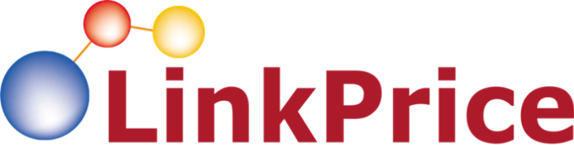

DSP
광고 지면 구매
광고주 관점에서 매체 인벤토리를 구매하고 운영하는 영역

DATA → TARGETING → CREATIVE → CONVERSION → OPTIMIZATION
온라인 사용자의 행동 데이터를 기반으로 적합한 광고를 적합한 유저에게 노출하는
데이터 기반 네트워크 광고 플랫폼입니다.
광고주 관점에서 매체 인벤토리를 구매하고 운영하는 영역
다양한 매체의 광고 인벤토리를 연결하고 송출하는 영역
타겟팅과 오디언스 설계를 위한 데이터 분석 영역
UV/UA 신규 유입 캠페인과 리타겟팅·리인게이지먼트를 연결해 Awareness → Conversion → Loyalty까지 대응합니다.
User Action의 최신성·빈도·주기를 학습해 오디언스, 지면, 입찰, 예산, 크리에이티브를 지속적으로 최적화합니다.
※ 수치는 2024 모비온 매체 소개서 기준
신규 유입 · 브랜딩 · 프로모션
ROAS · 구매전환 · 리타겟팅
유입 확대 · 즉각적 전환 유도
신뢰 형성 · CVR 개선
브랜딩 · 신제품 인지도
대규모 Reach · 신규고객 확보
방송 유입 · 단기 트래픽 · GMV
이탈 방지 · 사이트 CVR 개선
In-Market · Behavioral · Prospecting · Lookalike · Keyword
방문 · 상품조회 · 반복조회 · 장바구니
Retargeting · Purchaser · Retention · Contact List
In-Market · Behavioral · Prospecting · Lookalike
고정배너 · 동영상 · 아이커버
방문 · 조회 · 장바구니 모수 축적
상품화배너 · 리뷰 · 인사이트
구매 이력 · 빈도 · 주기 · 최신성을 활용해 고객 가치를 구분하고 고의도 오디언스를 우선 운영합니다.
조회 상품뿐 아니라 유사 상품, Best 상품, 판매예측 상품, 타고객 추가 관심 상품까지 추천합니다.
유저의 실제 행동을 기반으로 상품 이미지를 자동 생성·노출하며, AI 추천 로직을 통해 전환 가능성이 높은 상품을 선택합니다.
고정배너 · 동영상배너 · MOBON × Kakao · 아이커버
UV · CPC · 신규 방문자 · 신규회원 · 신규 구매자 · 신규 CVR
관심사 · 카테고리 · 검색 행동 · In-Market · Lookalike
동영상 · Kakao · 고정배너 · Rich Media
Reach · Impression · CTR · 신규 UV · 후속 전환
초기 데이터 확보 및 타겟·지면·소재별 성과 확인
고효율 영역으로 예산 이동, 저효율 영역 제외
고성과 상품과 고객군 중심으로 전환 볼륨 확대
KPI를 유지하며 신규 오디언스·지면 확장
신규 고객을 확보하고, 관심 고객 데이터를 축적하고, 구매 가능성이 높은 고객을 식별해
개인화된 상품을 제안하며 장기 성장 구조를 만듭니다.
데이터는 이미 존재합니다. 고객도 존재합니다.
중요한 것은 어떤 고객을 찾아 어떤 메시지를 전달하고, 어떤 KPI를 기준으로 최적화하느냐입니다.